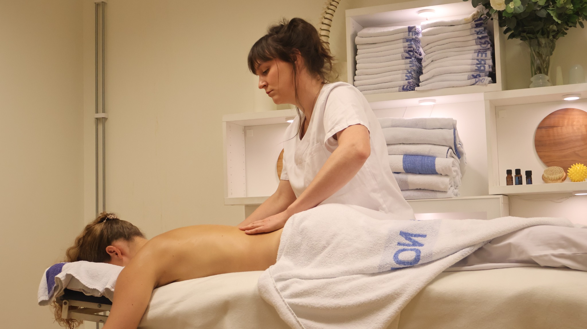
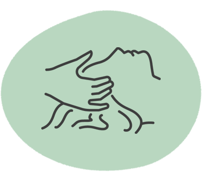
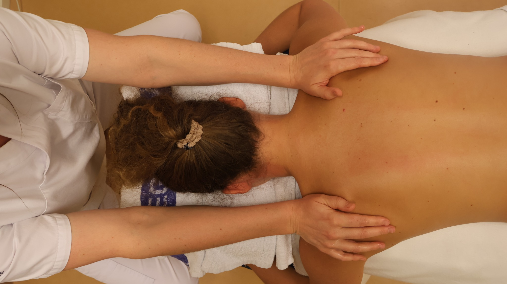

Helanova
Helanova
För dig.
För din kropp.
Efter dina behov.
Från en stunds återhämtning till massage med fokus på dina muskelbesvär. Hos oss börjar behandlingen med dig.
Hitta din behandlingHitta din behandling.
Ta en titt på våra behandlingar. Du behöver inte veta exakt vad du ska välja – vi hjälper dig gärna.

Massage
Vi kombinerar olika massagetekniker utifrån dina behov och önskemål.
Läs mer
Avslappning
En mjukare massage för dig som vill varva ner och ta en paus.
Läs mer
Terapeutisk gravidmassage
Massage som anpassas efter dig och din kropp under graviditeten.
Läs mer
Lymfmassage
En behandling med lätta strykningar, mjuka tryck och andning.
Läs mer
Fascia Vibes Therapy
Fasciabehandling med pulserande vibrationer och manuella tekniker.
Läs mer
Myofascial Energetic Release
MER är en form av kroppsbehandling med fokus på fascia och beröring.
Läs mer
Somatic Experiencing
Ett kroppsorienterat arbetssätt med uppmärksamhet på kroppens signaler.
Läs mer
Friskvård och försäkring
Läs om kvitto, friskvårdsbidrag och hur du kommer i kontakt med oss.
Läs merSvårt att välja? Berätta vad du söker, så hjälper vi dig →
Massage
Vi kombinerar olika massagetekniker utifrån dina behov och önskemål.
Boka massage Alla behandlingar ↑En behandling som formas efter dig.
Tillsammans går vi igenom vad du söker hjälp med och anpassar massagen efter din kropp. Du behöver inte känna till de olika teknikerna i förväg – det hjälper vi dig med.
Tekniker vi använder
Svensk klassisk massage
Med knådningar, strykningar och tryck anpassas massagen efter dina önskemål. En session kan ha fokus på ett särskilt område eller på en mer övergripande massage.
Triggerpunktsbehandling
Här arbetar terapeuten med riktat tryck på ömma områden i musklerna. Du och terapeuten stämmer av hur trycket känns under behandlingen.
Koppningsmassage
Vid koppningsmassage används koppar som skapar ett undertryck mot huden. Fråga gärna din terapeut hur tekniken används i din behandling.
Stretching / muskeltöjning
Assisterad muskeltöjning kan ingå som ett komplement till massagen. Rörelserna anpassas efter dina förutsättningar.
Deep tissue massage
En massageteknik med fokus på djupare vävnader. Tryck och intensitet anpassas i dialog med dig.
Avslappningsmassage
Lugnare beröring med utrymme för återhämtning. Läs även om vår separata behandling för avslappning längre ner på sidan.
Avslappning
En mjukare massage för dig som vill varva ner och ta en paus.
Boka tid Alla behandlingar ↑En stund att bara vara.
Här får lugnet ta plats. Berätta gärna vilken beröring du uppskattar och vilka områden du vill att vi fokuserar på. Behandlingen formas tillsammans med dig.

Terapeutisk gravidmassage
Massage som anpassas efter dig och din kropp under graviditeten.
Boka tid Alla behandlingar ↑Plats för dig och din kropp.
Vi lyssnar på dina önskemål och anpassar behandlingen och din position på bänken. Kontakta oss gärna före bokningen om du har frågor inför besöket.
Berätta gärna att du är gravid när du bokar och om det är något särskilt du vill att terapeuten tar hänsyn till.
Lymfmassage
En behandling med lätta strykningar, mjuka tryck och andning.
Boka tid Alla behandlingar ↑Ett varsamt möte.
Vill du veta mer om hur en session går till eller om behandlingen passar dina önskemål? Hör av dig så hjälper vi dig inför bokningen.
Fråga oss om behandlingen ↗Fascia Vibes Therapy
Fasciabehandling med pulserande vibrationer och manuella tekniker.
Boka tid Alla behandlingar ↑Ett annat sätt att arbeta med kroppen.
Behandlingen utförs med tunna kläder på. Vi går igenom dina önskemål inför sessionen och anpassar upplägget efter dig.
Fråga oss om behandlingen ↗Myofascial Energetic Release
MER är en form av kroppsbehandling med fokus på fascia och beröring.
Boka tid Alla behandlingar ↑Utrymme att känna efter.
Ett personligt samtal får inleda mötet. Tillsammans med terapeuten går du igenom vad du önskar av sessionen och hur behandlingen läggs upp.
Fråga oss om behandlingen ↗Somatic Experiencing
Ett kroppsorienterat arbetssätt med uppmärksamhet på kroppens signaler.
Boka tid Alla behandlingar ↑Ett lyhört möte i din takt.
Du får utrymme att berätta vad du söker och ställa frågor till terapeuten. Kontakta oss gärna om du vill veta mer om arbetssättet innan du bokar.
Fråga oss om behandlingen ↗Har du friskvårdsbidrag?
Du får ett personligt kvitto efter betalningen att lämna till din arbetsgivare. Kontrollera med din arbetsgivare vilka villkor som gäller för ditt bidrag.
Har du frågor om försäkring? Kontakta oss så hjälper vi dig vidare.
Du behöver inte
välja själv.
Berätta vad du söker, så hjälper vi dig att hitta en behandling och terapeut som passar dig.